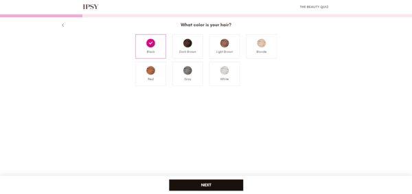

Research Form Design
Date:
I agree with the comments made in the article, "Best practices for form design", about conversion through forms since businesses typically want more orders or subscribers to their services. The user experience is important here, as when a viewer has a bad time completing a form, it can demotivate them, leading to the loss of potential business. A good practice mentioned in the article is visualizing the steps for the users in practice three. If a user feels that a form is too long and not worth the time to fill out, this can discourage them from continuing it. Adding visual cues of how far they are from the ending lets the user know when they'll be done with the form and if the time is worth filling out beforehand.

An example of a website form that exemplifies best practices is the Beauty Quiz for IPSY. It has a clear progress bar of how many steps the user has to go through to fill out the form, it starts with the easy questions first that are based on the user, and it minimizes drop-down menus by listing out the options for users.